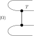
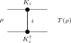
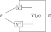
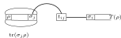

16 Channel Representations and Normal Forms
This chapter collects the representation material for finite-dimensional quantum channels from [ Wol12 , Chapter 2 ] : the Choi–Jamiołkowski isomorphism, Kraus representation theorems, Stinespring and Naimark dilations, ordered completely positive maps, Radon–Nikodym and open-system representations, trace-pairing expansions, SVD and Lorentz normal forms, and the channel determinant. These results are important for the later channel theory, but they are not prerequisites for the matrix-product-state Fundamental Theorem.
16.1 Representations
The following definitions support the Choi–Jamiol\- kowski isomorphism (Theorem 16.9) and the representation theorems of [ Wol12 , Chapter 2 ] .
Let \(X \in M_{d \cdot d'}(\mathbb {C})\) be a bipartite matrix indexed by
The left partial trace \(\operatorname{tr}_A(X)\) and right partial trace \(\operatorname{tr}_B(X)\) are the \(d' \times d'\) and \(d \times d\) matrices defined by
The maximally entangled state on \(\mathbb {C}^d \otimes \mathbb {C}^d\) is the rank-one projector
Concretely, \((|\Omega \rangle \! \langle \Omega |)_{(i_1,i_2),(j_1,j_2)} = \frac{1}{d} \delta _{i_1 j_1}\delta _{i_2 j_2}\) and \(\operatorname{tr}(|\Omega \rangle \! \langle \Omega |) = 1\).
The flip operator \(F\) on \(\mathbb {C}^d \otimes \mathbb {C}^d\) is
Its matrix entries are
In \(\mathbb {C}^2 \otimes \mathbb {C}^2\), let
Equivalently, \(v_{(0,1)}=1\), \(v_{(1,0)}=-1\), and all other coefficients are zero.
Given a linear map \(T : M_{D}(\mathbb {C}) \to M_{D}(\mathbb {C})\), the tensor extension \(T \otimes \operatorname{id}\) acts on bipartite matrices \(X \in M_{D \times D}(\mathbb {C})\) by applying \(T\) to each “slice”:
where \(X^{(i_2,j_2)}_{ab} = X_{(a,i_2),(b,j_2)}\) is the bipartite slice.
16.2 Choi–Jamiołkowski isomorphism
The Choi–Jamiołkowski isomorphism bends the input legs of the channel \(T\) around the maximally entangled pair \(|\Omega \rangle \), presenting the map as the matrix \(\tau =(T\otimes \operatorname{id})|\Omega \rangle \! \langle \Omega |\) on the doubled space:

The Choi matrix of a linear map \(T : M_{D}(\mathbb {C}) \to M_{D}(\mathbb {C})\) is
Concretely, \(\tau _{(i_1,i_2),(j_1,j_2)} = \frac{1}{D}\, (T(E_{i_2 j_2}))_{i_1 j_1}\) where \(E_{i_2 j_2}\) is the matrix unit. This is the Choi–Jamiol\- kowski convention of [ Wol12 , Proposition 2.1 ] .
The identity channel has Choi matrix \(|\Omega \rangle \! \langle \Omega |\).
Apply the identity map in the definition of the Choi matrix.
Let \(\theta (X)=X^T\) be matrix transposition on \(M_{D}(\mathbb {C})\), with \(D \ge 1\). Then
This is [ Wol12 , Equation 3.1 ] .
The \((i_2,j_2)\) slice of \(|\Omega \rangle \! \langle \Omega |\) is \(D^{-1}E_{i_2j_2}\). Transposition sends this matrix unit to \(D^{-1}E_{j_2i_2}\), whose \((i_1,j_1)\) entry is \(D^{-1}\) exactly when \(i_1=j_2\) and \(i_2=j_1\).
A linear map \(T : M_{D}(\mathbb {C}) \to M_{D}(\mathbb {C})\) is completely positive (in the Kraus sense) if and only if its Choi matrix \(\tau \ge 0\).
(\(\Rightarrow \)) If \(T(X) = \sum _i K_i X K_i^\dagger \), then \(\tau = \sum _i |v_i\rangle \! \langle v_i|\) where \((v_i)_{(a,b)} = c\, K_i(a,b)\) and \(c = 1/\sqrt{D}\). This is a sum of rank-one PSD matrices.
(\(\Leftarrow \)) If \(\tau \ge 0\), write \(\tau = \sum _m |v_m\rangle \! \langle v_m|\) by spectral decomposition, define \(K_m(a,b) = v_m(a,b)/c\), and recover \(T(X) = \sum _m K_m X K_m^\dagger \) by linearity on matrix units.
If \(T\) is trace-preserving, then \(\operatorname{tr}_A(\tau ) = \frac{1}{D} \mathbb {1}_D\).
\((\operatorname{tr}_A(\tau ))_{ij} = \operatorname{tr}(T(\Omega ^{(ij)})) = \operatorname{tr}(\Omega ^{(ij)})\) by trace preservation, where \(\Omega ^{(ij)} = \frac{1}{D} E_{ij}\) is the \((i,j)\)-slice of \(|\Omega \rangle \! \langle \Omega |\). Taking the trace gives \(\frac{1}{D}\delta _{ij}\).
The Choi matrix \(\tau \) is Hermitian if and only if \(T(B^\dagger ) = T(B)^\dagger \) for all \(B \in M_{D}(\mathbb {C})\).
The Choi matrix entries satisfy \(\tau _{(a,i),(b,j)} = \frac{1}{D}(T(E_{ij}))_{ab}\). Hermiticity of \(\tau \) says \(\overline{\tau _{(b,j),(a,i)}} = \tau _{(a,i),(b,j)}\), which unravels to \(T(E_{ji})_{ba} = \overline{T(E_{ij})_{ab}}\), i.e., \(T(E_{ij}^\dagger ) = T(E_{ij})^\dagger \). By linearity this extends to all \(B\).
If \(T\) is trace-preserving, then \(\operatorname{tr}(\tau ) = 1\).
\(\operatorname{tr}(\tau ) = \operatorname{tr}(\operatorname{tr}_A(\tau )) = \operatorname{tr}(\frac{1}{D}\mathbb {1}_D) = 1\).
16.3 Representation corollaries for channel decompositions
The next three corollaries follow from the Choi/Kraus/Stinespring representations already developed above. They correspond to [ Wol12 , Propositions 2.2–2.4 ] .
For any \(A, B, X \in M_{D}(\mathbb {C})\),
Each of the four summands on the right is a single-Kraus CP map, so every sesquilinear sandwich decomposes into a signed complex linear combination of CP maps.
Working entrywise, reduces to the scalar polarization identity \(4\, \alpha \, \overline{\delta } = \sum _{k=0}^{3} i^k (\alpha + i^k \beta )\overline{(\gamma + i^k \delta )}\) in \(\mathbb {C}\), which holds after substituting \(i^2 = -1\).
For any finite Kraus-like families \(\{ A_i\} , \{ B_i\} \), the map \(T(X) = \sum _i A_i X B_i^\dagger \) satisfies \(4\, T = T_1 - T_2 + i\, T_3 - i\, T_4\) with each \(T_k\) a CP map given explicitly by a single-side Kraus sum of the combined families.
Apply the polarization identity summand-by-summand.
Let \(T : M_{D}(\mathbb {C}) \to M_{D}(\mathbb {C})\) be linear. If \(T(|v\rangle \! \langle v|) = |v\rangle \! \langle v|\) for every \(v \in \mathbb {C}^D\), then \(T = \operatorname{id}\). In particular, a quantum channel preserving every pure state equals the identity.
Rank-one outer products \(|u\rangle \! \langle v|\) polarize into rank-one self-outer-products:
so \(T\) preserves every \(|u\rangle \! \langle v|\). Since the matrix units \(E_{ij} = |e_i\rangle \! \langle e_j|\) span \(M_{D}(\mathbb {C})\), \(T\) equals the identity on a spanning set, hence everywhere.
Given a finite family \(\{ \psi _i\} _{i \in \iota }\) of (unnormalized) vectors in \(\mathbb {C}^D\), its pure-ensemble density is \(\rho = \sum _i |\psi _i\rangle \! \langle \psi _i|\). Weights \(p_i \geq 0\) with \(\sum p_i = 1\) can be absorbed by replacing \(\psi _i \mapsto \sqrt{p_i} \psi _i\).
If two pure-state ensembles \(\{ \psi _i\} _{i \in \iota _1}\) and \(\{ \phi _j\} _{j \in \iota _2}\) are related by an isometric mixing matrix \(V \in \mathbb {C}^{\iota _1 \times \iota _2}\) with \(V^\dagger V = \mathbb {1}\) and \(\psi _i = \sum _j V_{ij} \phi _j\), then they induce the same pure-ensemble density operator. This is the sufficient direction of the Hughston–Jozsa–Wootters theorem; the converse is Theorem 16.18.
Expanding and applying the orthogonality relation \(\sum _i V_{ij}\overline{V_{ij'}} = \delta _{j j'}\) from \(V^\dagger V = \mathbb {1}\):
If two pure-state ensembles \(\{ \psi _i\} _{i \in \iota _1}\) and \(\{ \phi _j\} _{j \in \iota _2}\) induce the same pure-ensemble density operator and \(|\iota _2| \le |\iota _1|\), then there exists a tall isometric mixing matrix \(V \in \mathbb {C}^{\iota _1 \times \iota _2}\) with \(V^\dagger V = \mathbb {1}\) and \(\psi _i = \sum _j V_{ij} \phi _j\). The cardinality hypothesis is what makes \(V\) a tall isometry; the symmetric case \(|\iota _1| \le |\iota _2|\) follows by swapping the roles of the ensembles.
Embed each vector \(\psi _i\), \(\phi _j\) as the \(0\)-th column of a \(D \times D\) matrix with zeros elsewhere; call these \(K_i\), \(L_j \in M_{D}(\mathbb {C})\). A direct entry-wise computation shows that for any \(X \in M_{D}(\mathbb {C})\) both \(\sum _i K_i X K_i^\dagger \) and \(\sum _j L_j X L_j^\dagger \) collapse to \(X_{00} \cdot \rho \), so the density equality \(\rho _\psi = \rho _\phi \) forces the two Kraus families to define the same CP map. Theorem 16.29 then supplies an isometry \(V\) with \(V^\dagger V = \mathbb {1}\) and \(K_i = \sum _j V_{ij}\, L_j\); reading the equation off at column \(0\) recovers the vector relation \(\psi _i = \sum _j V_{ij} \phi _j\).
Under the cardinality hypothesis \(|\iota _2| \le |\iota _1|\), two pure-state ensembles induce the same density operator iff they are related by a tall isometric mixing matrix.
Combine the two directions above.
16.4 Kraus representation theorem
A Kraus representation writes the channel as \(T(\rho )=\sum _i K_i\rho K_i^\dagger \). In tensor-network form the Kraus index \(i\) is summed between the \(K_i\) layer and the \(K_i^\dagger \) layer:

If \(T(X) = \sum _i K_i X K_i^\dagger \) is trace-preserving, then \(\sum _i K_i^\dagger K_i = \mathbb {1}\).
For any \(N\), \(\operatorname{tr}((\sum _i K_i^\dagger K_i)\, N) = \sum _i \operatorname{tr}(K_i^\dagger K_i N) = \sum _i \operatorname{tr}(K_i N K_i^\dagger ) = \operatorname{tr}(T(N)) = \operatorname{tr}(N)\). Non-degeneracy of the trace pairing forces \(\sum _i K_i^\dagger K_i = \mathbb {1}\).
If \(\sum _i K_i^\dagger K_i = \mathbb {1}\), then \(T(X) = \sum _i K_i X K_i^\dagger \) is trace-preserving.
\(\operatorname{tr}(T(X)) = \sum _i \operatorname{tr}(K_i X K_i^\dagger ) = \sum _i \operatorname{tr}(K_i^\dagger K_i X) = \operatorname{tr}((\textstyle \sum _i K_i^\dagger K_i)\, X) = \operatorname{tr}(X)\).
If \(T(X) = \sum _i K_i X K_i^\dagger \) satisfies \(T(\mathbb {1}) = \mathbb {1}\), then
Evaluate the Kraus formula at the identity matrix.
Let \(U\) be a unitary \(r \times r\) matrix (\(U^\dagger U = \mathbb {1}\)) and suppose \(K_j = \sum _\ell U_{j\ell } \tilde{K}_\ell \). Then \(\{ K_j\} \) and \(\{ \tilde{K}_\ell \} \) define the same Kraus map: for every \(X \in M_{D}(\mathbb {C})\),
Substitute the combination formula, expand the triple sum over \(j,\ell ,\ell '\), swap summation order, and use the entry-wise form of \(U^\dagger U = \mathbb {1}\) to collapse to \(\ell = \ell '\) diagonal terms.
Let \(W\) be an isometry between two Kraus index spaces, so \(W^\dagger W = \mathbb {1}\). If
then the Kraus families \(\{ K_j\} \) and \(\{ \widetilde K_\ell \} \) define the same completely positive map.
Expand the Kraus sums, interchange the finite summations, and use \(W^\dagger W = \mathbb {1}\) to collapse the coefficient matrix.
Let \(\{ K_j\} _{j=0}^{r-1}\) and \(\{ K'_j\} _{j=0}^{r-1}\) be two Hilbert–Schmidt orthonormal Kraus families, and suppose
Then the transition matrix \(U\) is unitary: \(U^\dagger U = \mathbb {1}_r\).
Expand \(\operatorname{tr}(K_j^\dagger K_i)\) using the change of basis. Hilbert–Schmidt orthonormality of both Kraus families identifies the Gram matrix with the identity, yielding the matrix identity \(U U^\dagger = \mathbb {1}_r\), hence also \(U^\dagger U = \mathbb {1}_r\).
If two Kraus families satisfy \(\sum _\alpha B_\alpha X B_\alpha ^\dagger = \sum _j A_j X A_j^\dagger \) for all \(X\), then \(\sum _\alpha B_\alpha ^\dagger Y B_\alpha = \sum _j A_j^\dagger Y A_j\) for all \(Y\).
Use the trace pairing: for all \(X\), \(\operatorname{tr}(X^\dagger (\sum B_\alpha ^\dagger Y B_\alpha )) = \operatorname{tr}((\sum B_\alpha X^\dagger B_\alpha ^\dagger ) Y) = \operatorname{tr}((\sum A_j X^\dagger A_j^\dagger ) Y) = \operatorname{tr}(X^\dagger (\sum A_j^\dagger Y A_j))\). Nondegeneracy of the trace pairing gives the result.
If two Kraus families define the same CPM, then \(\sum _\alpha B_\alpha ^\dagger B_\alpha = \sum _j A_j^\dagger A_j\).
Specialise Theorem 16.26 at \(Y = \mathbb {1}\).
If \(\sum _\alpha B_\alpha X B_\alpha ^\dagger = \sum _j A_j X A_j^\dagger \) for all \(X\) and \(r_2 \le r_1\) (where \(\{ B_\alpha \} _{\alpha =0}^{r_1-1}\) is the larger family and \(\{ A_j\} _{j=0}^{r_2-1}\) the smaller), then there exists a rectangular isometry \(V\) (\(r_1 \times r_2\), \(V^\dagger V = \mathbb {1}_{r_2}\)) such that \(B_\alpha = \sum _j V_{\alpha j}\, A_j\).
Pad the smaller family to size \(r_1\), establish Gram matrix equality \(M_B^\dagger M_B = M_{A'}^\dagger M_{A'}\) from dual map equality, construct a partial isometry via inner product preservation on the range, and extend to a full isometry \(V\) with \(V^\dagger V = \mathbb {1}_{r_2}\).
Variant of Theorem 16.28 with general finite index sets \(\iota _1, \iota _2\) in place of standard index sets of cardinalities \(r_1\) and \(r_2\).
Reindex by choosing enumerations of those finite index sets and apply Theorem 16.28.
Let \(\{ B_\alpha \} _{\alpha \in \iota _1}\) and \(\{ A_j\} _{j \in \iota _2}\) be finite Kraus families with \(|\iota _2| \le |\iota _1|\). Then the following are equivalent:
\(\sum _\alpha B_\alpha X B_\alpha ^\dagger = \sum _j A_j X A_j^\dagger \) for all \(X \in M_{D}(\mathbb {C})\).
There exists a matrix \(V = (V_{\alpha j})\) with \(V^\dagger V = \mathbb {1}\) such that \(B_\alpha = \sum _j V_{\alpha j} A_j\) for every \(\alpha \).
The implication \((1) \Rightarrow (2)\) is Theorem 16.29. Conversely, expand \(\sum _\alpha B_\alpha X B_\alpha ^\dagger \) using \(B_\alpha = \sum _j V_{\alpha j} A_j\), interchange the finite sums, and use \(V^\dagger V = \mathbb {1}\) to collapse the coefficient matrix to the diagonal.
Let \(\{ B_\alpha \} _{\alpha \in \iota }\) and \(\{ A_j\} _{j \in \iota }\) be two Kraus families with the same finite index set. Then the following are equivalent:
\(\sum _\alpha B_\alpha X B_\alpha ^\dagger = \sum _j A_j X A_j^\dagger \) for all \(X \in M_{D}(\mathbb {C})\).
There exists a unitary matrix \(U = (U_{\alpha j})\) such that \(B_\alpha = \sum _j U_{\alpha j} A_j\) for every \(\alpha \).
Apply Theorem 16.30 with \(|\iota | = |\iota |\). In the square case an isometry matrix is unitary, and the converse is immediate.
If a completely positive map admits a Kraus representation with exactly \(r\) operators, then its Choi matrix is a sum of \(r\) rank-one outer products. Consequently,
Conversely, diagonalizing the positive semidefinite Choi matrix and keeping only the nonzero eigenvalue summands produces a Kraus family with exactly \(\operatorname{rank}(\tau _E)\) operators. Hence the Choi rank is precisely the minimal Kraus cardinality.
For the forward implication, expand the Choi matrix using the Kraus formula and write \(\tau _E = \sum _j v_j v_j^\dagger \) with one vector \(v_j\) for each Kraus operator. The column space of this sum lies in the span of the \(r\) vectors \(\{ v_j\} \), so the rank is at most \(r\). For the converse, use the spectral decomposition of the positive semidefinite Choi matrix, discard the zero-eigenvalue terms, and rescale the remaining eigenvectors into Kraus operators.
16.5 Stinespring dilation
The Stinespring dilation realizes the channel through an isometry \(V\) into a larger space, \(T(\rho )=\operatorname{tr}_E[V\rho V^\dagger ]\); tracing out the environment \(E\) returns the channel:

Given Kraus operators \(\{ K_j\} _{j=0}^{r-1}\) with \(K_j \in M_{D}(\mathbb {C})\), the Stinespring isometry \(V : \mathbb {C}^D \to \mathbb {C}^D \otimes \mathbb {C}^r\) is the \((D \cdot r) \times D\) matrix
This implements \(V = \sum _j K_j \otimes |j\rangle \).
For indices \(i,k \in \{ 0,\ldots ,D-1\} \) and \(j \in \{ 0,\ldots ,r-1\} \),
The Stinespring isometry satisfies
For Kraus operators \(\{ K_j\} \) and \(A \in M_{D}(\mathbb {C})\),
This is the Stinespring representation of the dual (Heisenberg picture) map \(T^*\).
Compute \((V^\dagger (A \otimes \mathbb {1}_r) V)_{ab}\) by summing over the product index \((i,j)\); the \(\delta _{jl}\) from \(\mathbb {1}_r\) collapses the sum over \(l\), giving \(\sum _j K_j^\dagger A K_j\).
\(V^\dagger V = \mathbb {1}_D\) if and only if \(\sum _j K_j^\dagger K_j = \mathbb {1}_D\). In particular, \(V\) is an isometry precisely when the Kraus map is trace-preserving.
\((V^\dagger V)_{ab} = \sum _{(i,j)} \overline{V_{(i,j),a}}\, V_{(i,j),b} = \sum _j \sum _i \overline{(K_j)_{ia}}\, (K_j)_{ib} = (\sum _j K_j^\dagger K_j)_{ab}\).
The Kraus map \(T(\rho ) = \sum _j K_j \rho K_j^\dagger \) equals the partial trace over the dilation space:
This is the Schrödinger-picture Stinespring representation.
Expand \((V\rho V^\dagger )_{(i,k),(j,k)}\) and sum over \(k\) to recover \(\sum _k K_k \rho K_k^\dagger \).
Every completely positive map admits an ancilla dimension \(r\), Kraus operators \(\{ K_j\} _{j=0}^{r-1}\), and the concrete representation \(\pi (A) = A \otimes \mathbb {1}_r\) such that
Choose a Kraus representation of \(E\) and apply the explicit Heisenberg-picture Stinespring formula.
Every quantum channel admits a Stinespring dilation whose matrix \(V\) is an isometry, equivalently \(V^\dagger V = \mathbb {1}\).
Choose Kraus operators for the channel and use trace preservation to obtain the Stinespring isometry condition \(V^\dagger V = \mathbb {1}\).
16.6 Ordered CP maps, Radon–Nikodym, and open-system representation
The next three results form the structural part of [ Wol12 , Theorems 2.3–2.5 ] : the ordered CP-map theorem, the Radon–Nikodym theorem for completely positive maps, and the open-system representation. They refine the Stinespring dilation by tracking how two CP maps related by domination or decomposition sit inside a common dilation space.
For linear maps \(S, T : M_{D}(\mathbb {C}) \to M_{D}(\mathbb {C})\), write \(T \le S\) (in the CP order) when \(S - T\) is completely positive.
For natural numbers \(r, s\), let \(C = C_{r,s} \in \mathbb {C}^{r \times (r+s)}\) be the rectangular \(r \times (r+s)\) matrix whose rows are the first \(r\) rows of the identity on \(\mathbb {C}^{r+s}\): \(C_{ij} = 1\) if \(j = i {\lt} r\) and \(0\) otherwise.
The block-top matrix satisfies \(C C^\dagger = \mathbb {1}_r\).
Direct entrywise computation: \((C C^\dagger )_{ii'} = \sum _j C_{ij}\overline{C_{i'j}}\) collapses to \(\delta _{ii'}\).
The block-top matrix satisfies \(C^\dagger C \le \mathbb {1}_{r+s}\).
The matrix \(C^\dagger C\) is diagonal with a \(1\) on the first \(r\) coordinates and a \(0\) on the last \(s\), so \(\mathbb {1}- C^\dagger C\) is positive semidefinite.
Let \(K : \{ 0,\ldots ,r-1\} \to M_{D}(\mathbb {C})\) and \(L : \{ 0,\ldots ,s-1\} \to M_{D}(\mathbb {C})\) be two Kraus families. Write \(K\mathbin {+\! +}L\) for their concatenation as a family indexed by \(\{ 0,\ldots ,r+s-1\} \). Then
Entrywise expansion of both sides: the Kronecker product with \(C_{r,s}\) picks out the first \(r\) coordinates of the dilation space, matching the action of \(V_{K + \! + L}\) on those coordinates, which is precisely \(V_K\).
Let \(T_1, T_2 : M_{D}(\mathbb {C}) \to M_{D}(\mathbb {C})\) be CP maps with \(T_1 \le T_2\). Then there exist an ancilla dimension \(m\), Heisenberg-form Stinespring matrices \(V_1, V_2\) realizing \(T_1, T_2\) via \(T_i(A) = V_i^\dagger (A \otimes \mathbb {1}) V_i\), and a contraction \(\widetilde C\) on the dilation space with \(\widetilde C^\dagger \widetilde C \le \mathbb {1}\) such that
This is [ Wol12 , Theorem 2.3 ] .
Choose a Heisenberg-form Kraus family \(K_1\) of \(T_1\) with Stinespring matrix \(V_1 = V_{K_1}\), and Kraus operators \(L\) of the CP map \(T_2 - T_1\) in Schrödinger orientation. Let \(L^\dagger \) denote the conjugate-transposed family. Set \(m = r_1 + s\) and let \(K_2 = K_1 \mathbin {+\! +} L^\dagger \). Then \(T_2(A) = T_1(A) + (T_2 - T_1)(A) = \sum _i (K_1^i)^\dagger A K_1^i + \sum _j L_j A L_j^\dagger \), and the latter equals \(\sum _i (K_1^i)^\dagger A K_1^i + \sum _j (L_j^\dagger )^\dagger A L_j^\dagger \) which is the Heisenberg form for \(K_2\), yielding \(T_2(A) = V_{K_2}^\dagger (A \otimes \mathbb {1}) V_{K_2}\). Taking \(\widetilde C = C_{r_1, s}\) the intertwining \(V_{K_1} = (\mathbb {1}_D \otimes \widetilde C) V_{K_2}\) is Lemma 16.45, and \(\widetilde C^\dagger \widetilde C \le \mathbb {1}\) is Lemma 16.44.
For \(r, s\), let \(P_{\mathrm{top}} = C_{r,s}^\dagger C_{r,s}\) and \(P_{\mathrm{bot}} = \mathbb {1}- P_{\mathrm{top}}\). Both are PSD (for \(P_{\mathrm{bot}}\), by Lemma 16.44) and \(P_{\mathrm{top}} + P_{\mathrm{bot}} = \mathbb {1}\).
Let \(\{ T_i\} _{i\in I}\) be a nonempty finite family of completely positive maps, let \(T : M_{D}(\mathbb {C}) \to M_{D}(\mathbb {C})\) satisfy \(\sum _{i\in I}T_i=T\), and suppose that \(T\) has a supplied Stinespring representation
Then there are positive semidefinite operators \(P_i\in M_{r}(\mathbb {C})\) with
For every \(i\in I\) and \(A\in M_{D}(\mathbb {C})\),
This is [ Wol12 , Theorem 2.4 ] , with the nonempty-family condition made explicit; see docs/paper-gaps/wolf_radon_nikodym_nonempty_family.tex.
Choose Kraus families for the component maps \(T_i\) and group all their Kraus operators into one finite family. Add zero Kraus operators to one component so that this grouped family has at least as many rows as the supplied Stinespring dilation. Write the grouped Kraus operators as \(B_\alpha \), with a label map \(\ell (\alpha )\in I\), and write the Kraus operators obtained from the blocks of \(V\) as \(A_j\). Rectangular Kraus freedom gives a matrix \(W\) with
For the fibre over \(i\), set
Then \(P_i\ge 0\) and \(\sum _i P_i=\mathbb {1}_r\) follows from \(W^\dagger W=\mathbb {1}_r\). Finally,
which proves the claim.
Let \(T_1, T_2 : M_{D}(\mathbb {C}) \to M_{D}(\mathbb {C})\) be completely positive. There exist an ancilla dimension \(m\), a Kraus family \(K\) with Stinespring matrix \(V = V_K\), and positive semidefinite operators \(P_1, P_2 : \mathbb {C}^m \to \mathbb {C}^m\) with \(P_1 + P_2 = \mathbb {1}_m\) such that, for \(i = 1, 2\) and every \(A \in M_{D}(\mathbb {C})\),
Take Heisenberg-form Kraus families \(K_1\) for \(T_1\) and Schrödinger-form \(L\) for \(T_2\), and form \(K = K_1 \mathbin {+\! +} L^\dagger \) on \(\mathbb {C}^{r_1 + s}\). Choose \(P_1 = P_{\mathrm{top}}\), \(P_2 = P_{\mathrm{bot}}\) as in Definition 16.47. The Kronecker identity \(A \otimes (C^\dagger C) = (\mathbb {1}\otimes C)^\dagger (A \otimes \mathbb {1}) (\mathbb {1}\otimes C)\) rewrites \(V^\dagger (A \otimes P_{\mathrm{top}}) V\) as \(((\mathbb {1}\otimes C) V)^\dagger (A \otimes \mathbb {1}) ((\mathbb {1}\otimes C) V)\), which equals \(V_{K_1}^\dagger (A \otimes \mathbb {1}) V_{K_1} = T_1(A)\) by the intertwining Lemma 16.45. For the complementary block, \(A \otimes P_{\mathrm{bot}} = A \otimes \mathbb {1}- A \otimes P_{\mathrm{top}}\) and sandwiching by \(V\) yields \((T_1 + T_2)(A) - T_1(A) = T_2(A)\).
Every quantum channel \(T : M_{D}(\mathbb {C}) \to M_{D}(\mathbb {C})\) admits a Stinespring isometry \(V\) on an ancilla space \(\mathbb {C}^r\) such that
Every quantum channel \(T\) admits an isometric Stinespring dilation \(V\) such that \(T(\rho ) = \operatorname{tr}_E(V \rho V^\dagger )\).
Rewrite the componentwise identity of Theorem 16.51 as a partial trace over the ancilla factor.
Let \(A,B:\mathbb {C}^n\to \mathbb {C}^m\) be linear maps with \(B^\dagger B=A^\dagger A\). Then there is a unitary \(U\) on \(\mathbb {C}^m\) such that \(B=UA\).
For \(r \geq 1\), let \(W_0 : \mathbb {C}^D \to \mathbb {C}^D \otimes \mathbb {C}^r\) be the isometry \(W_0 x = x \otimes e_0\).
The first-environment embedding satisfies \(W_0^\dagger W_0=\mathbb {1}\).
For \(D \geq 1\), every quantum channel \(T\) on \(\mathbb {C}^D\) admits an environment dimension \(r \geq 1\) and a unitary \(U\) on \(\mathbb {C}^D \otimes \mathbb {C}^r\) such that, for every matrix \(\rho \) on \(\mathbb {C}^D\),
Take the isometric open-system representation \(T(\rho )=\operatorname{tr}_E(V\rho V^\dagger )\). Since \(V^\dagger V=\mathbb {1}=W_0^\dagger W_0\), Lemma 16.53 gives a unitary \(U\) with \(V=UW_0\). Substituting this identity into the partial trace formula gives the displayed expression.
16.7 POVMs and Naimark dilation
A positive operator-valued measure with \(n\) outcomes on \(\mathbb {C}^D\) is a family \(\{ E_i\} _{i=0}^{n-1}\) of positive semidefinite operators on \(\mathbb {C}^D\) satisfying the resolution of identity
For a POVM \(\{ E_i\} \), each effect \(E_i \ge 0\) admits a square-root factorisation \(E_i = M_i^\dagger M_i\) with \(M_i \in M_{D}(\mathbb {C})\). The operators \(M_i\) are the Naimark Kraus square roots.
For a POVM \(\{ E_i\} \) with square roots \(E_i = M_i^\dagger M_i\), one has
Sum the identities \(E_i = M_i^\dagger M_i\) and use the defining resolution of the identity for the POVM.
The Naimark isometry \(V : \mathbb {C}^D \to \mathbb {C}^D \otimes \mathbb {C}^n\) of a POVM is the Stinespring-type construction
The Naimark projectors on \(\mathbb {C}^D \otimes \mathbb {C}^n\) are
The Naimark isometry satisfies \(V^\dagger V = \mathbb {1}_D\).
The Stinespring Gram identity gives \(V^\dagger V = \sum _i M_i^\dagger M_i = \sum _i E_i = \mathbb {1}_D\) by the resolution of identity.
The Naimark projectors satisfy \(P_i^2 = P_i\), \(P_i^\dagger = P_i\), \(P_i P_j = 0\) for \(i \ne j\), and \(\sum _i P_i = \mathbb {1}_{\mathbb {C}^D \otimes \mathbb {C}^n}\).
Each identity follows from direct entrywise computation using the delta-function form of \((P_i)_{(a,b),(c,d)}\).
Every POVM \(\{ E_i\} _{i=0}^{n-1}\) arises as a projective measurement on a dilation: for the isometry \(V\) and projectors \(P_i\) above,
Computing entrywise, \((V^\dagger P_i V)_{k,\ell } = \sum _{a} \overline{(M_i)_{a,k}}\, (M_i)_{a,\ell } = (M_i^\dagger M_i)_{k,\ell } = (E_i)_{k,\ell }\).
For every POVM \(\{ E_i\} \) on \(\mathbb {C}^D\) there exist a dilation dimension \(r\), an isometry \(V : \mathbb {C}^D \to \mathbb {C}^D \otimes \mathbb {C}^r\), and a projective measurement \(\{ P_i\} \) on the dilation satisfying \(E_i = V^\dagger P_i V\).
Take \(r = n\) and the explicit witnesses \(V = \sum _i M_i \otimes |i\rangle \) and \(P_i = \mathbb {1}_D \otimes |i\rangle \! \langle i|\).
A Naimark dilation of a POVM \(\{ E_i\} \) consists of an isometry \(V\) into a larger Hilbert space together with a projective measurement \(\{ P_i\} \) there such that \(E_i = V^\dagger P_i V\) for all \(i\).
The explicit isometry \(V = \sum _i M_i \otimes |i\rangle \) and projectors \(P_i = \mathbb {1}_D \otimes |i\rangle \! \langle i|\) satisfy the defining axioms of a Naimark dilation.
Combine the previously proved identities \(V^\dagger V = \mathbb {1}_D\), \(P_i^2 = P_i\), \(P_i^\dagger = P_i\), \(P_i P_j = 0\) for \(i \ne j\), \(\sum _i P_i = \mathbb {1}\), and \(V^\dagger P_i V = E_i\).
Let \(V : \mathbb {C}^D \to \mathbb {C}^D \otimes \mathbb {C}^n\) satisfy \(V^\dagger P_i V = E_i\) for the canonical projectors \(P_i = \mathbb {1}_D \otimes |i\rangle \! \langle i|\). Then there exists an isometry \(W\) on the dilated space such that \(V = W V_0\), where \(V_0\) is the canonical Naimark isometry of \(\{ E_i\} \).
For each outcome \(i\), the \(i\)-th block of \(V\) has Gram matrix \(E_i\). Comparing with the canonical square root \(M_i\) gives \(V_i^\dagger V_i = M_i^\dagger M_i\), hence \(V_i = U_i M_i\) for a unitary \(U_i\) on \(\mathbb {C}^D\). Assemble the \(U_i\) block-diagonally to obtain an isometry \(W = \bigoplus _i U_i\) on \(\mathbb {C}^D \otimes \mathbb {C}^n\), and then \(V = W \sum _i M_i \otimes |i\rangle = W V_0\).
Given an isometry \(V : \mathbb {C}^D \to \mathbb {C}^{d'}\) with \(V^\dagger V = \mathbb {1}_D\) and a family \(\{ P_i\} _{i=0}^{n-1}\) of positive semidefinite operators on \(\mathbb {C}^{d'}\) summing to the identity, the pulled-back operators
form a POVM. In particular, any projective measurement on the dilation (a special case of a PSD resolution of identity) pulls back to a POVM.
A quantum instrument with \(n\) outcomes is a family \(\{ \Phi _i\} _{i=0}^{n-1}\) of completely positive maps on \(M_{D}(\mathbb {C})\) whose sum \(\sum _i \Phi _i\) is trace-preserving.
Associated to an instrument are the total channel \(\sum _i \Phi _i\), the unnormalized update \(\rho \mapsto \Phi _i(\rho )\) for each outcome \(i\), the outcome probability \(p_i(\rho ) = \operatorname{tr}(\Phi _i(\rho ))\), and the normalized posterior state \(\Phi _i(\rho ) / p_i(\rho )\) whenever \(p_i(\rho ) \neq 0\).
The total map \(\sum _i \Phi _i\) of an instrument is a quantum channel.
Complete positivity of the sum follows from closure of CP maps under finite addition; trace preservation is built into the definition.
For every state \(\rho \in M_{D}(\mathbb {C})\), the outcome probabilities \(p_i(\rho ) := \operatorname{tr}(\Phi _i(\rho ))\) sum to \(\operatorname{tr}(\rho )\).
Linearity of trace and trace preservation of \(\sum _i \Phi _i\) give \(\sum _i \operatorname{tr}(\Phi _i(\rho )) = \operatorname{tr}((\sum _i \Phi _i)(\rho )) = \operatorname{tr}(\rho )\).
If \(\rho \in M_{D}(\mathbb {C})\) is positive semidefinite, then each outcome probability \(p_i(\rho ) = \operatorname{tr}(\Phi _i(\rho ))\) is a non-negative real number.
Each \(\Phi _i\) is completely positive, hence positive, so \(\Phi _i(\rho )\) is positive semidefinite and its trace is a non-negative real.
16.8 Trace-pairing expansion in transfer-matrix form
The trace-pairing expansion separates a linear map into the scalar input pairing, the transfer coefficients, and the output basis element:
The diagram records the same factorization by closing the input matrix with \(\sigma _j\), weighting the resulting scalar by \(t_{ij}\), and producing the output matrix through \(\sigma _i\):

A basis \(\{ \sigma _i\} _i\) of \(M_{D}(\mathbb {C})\) is trace-self-dual when its coordinate functionals are given by trace pairing:
For a linear map \(T : M_{D}(\mathbb {C}) \to M_{D}(\mathbb {C})\) and a trace-self-dual basis \(\{ \sigma _i\} \), define coefficients
If \(\{ \sigma _i\} \) is trace-self-dual, then every linear map \(T : M_{D}(\mathbb {C}) \to M_{D}(\mathbb {C})\) admits the expansion
Expand \(\rho \) and each \(T(\sigma _j)\) in the chosen basis and substitute. The trace-self-dual identity replaces coordinates by traces, giving the stated double-sum formula.
16.9 SVD normal form (existence)
[ Wol12 , Section 2.3 ] discusses two families of normal forms for the transfer-matrix representation of a quantum channel: the singular value decomposition (SVD) and, for qubit channels, the Lorentz normal form obtained by \(\operatorname{SL}(2, \mathbb {C})\) filtering operations. The SVD normal form is proved below. The Lorentz normal form theorem (Theorem 16.94) requires the compactness and minimisation argument for \(\operatorname{SL}(2, \mathbb {C})\) filterings in [ Wol12 , Propositions 2.9 and 2.11 ] ; see Section 16.10.
Every positive semidefinite matrix \(M \in M_{D}(\mathbb {C})\) admits a decomposition
where \(U \in \mathcal{U}(D)\) is unitary and \(\sigma : \{ 0, \ldots , D-1\} \to \mathbb {R}_{\ge 0}\) has non-negative entries.
The spectral theorem for Hermitian matrices provides an orthonormal eigenbasis with real eigenvalues. Positive semidefiniteness forces those eigenvalues to be non-negative, and the decomposition is written in SVD form with \(U\) the eigenvector unitary and \(\sigma \) the eigenvalue sequence.
Every invertible complex square matrix \(M \in M_{D}(\mathbb {C})\) admits a singular value decomposition
with \(U, V \in \mathcal{U}(D)\) unitary and \(\sigma _i {\gt} 0\) for all \(i\).
Apply the spectral theorem to the positive definite matrix \(M^{\dagger } M\) to obtain \(M^{\dagger } M = V \operatorname{diag}(\lambda ) V^{\dagger }\) with \(\lambda _i {\gt} 0\). Set \(\sigma _i := \sqrt{\lambda _i}\) and \(\Sigma := \operatorname{diag}(\sigma )\); since \(\Sigma \) is a real positive diagonal, it is self-adjoint and invertible. Define \(U := M V \Sigma ^{-1}\). Then \(U^{\dagger } U = \Sigma ^{-1} V^{\dagger } (M^{\dagger } M) V \Sigma ^{-1} = \Sigma ^{-1} \operatorname{diag}(\lambda ) \Sigma ^{-1} = \mathbb {1}\), so \(U\) is unitary, and \(U \Sigma V^{\dagger } = M V (\Sigma ^{-1} \Sigma ) V^{\dagger } = M V V^{\dagger } = M\).
Every invertible transfer matrix \(\widehat{T}\) of a linear super-operator \(T : M_{D}(\mathbb {C}) \to M_{D}(\mathbb {C})\) admits a singular value decomposition \(\widehat{T} = U \operatorname{diag}(\sigma ) V^{\dagger }\) with \(U, V\) unitary on \(\mathbb {C}^{D} \otimes \mathbb {C}^{D}\) and \(\sigma _i {\gt} 0\).
Direct specialisation of Theorem 16.79 to the index type \(\{ 0,\ldots ,D-1\} \times \{ 0,\ldots ,D-1\} \) used by the transfer-matrix representation.
Theorem 16.79 produces the singular values as an unordered family, without the usual convention that \(\sigma _{i}\) are sorted in non-increasing order or the statement that they are uniquely determined by \(M\). Downstream applications in [ Wol12 , Section 2.3 ] , such as trace-norm identities, polar decomposition, and the Lorentz normal form, will typically require the sorted / unique variant; that refinement is future work.
16.10 Lorentz normal form
This section states the existence theorems from [ Wol12 , Section 2.3 ] .
An SL-filtering for \(D \times D\) matrices is a completely positive map of the form \(\Phi (X) = S X S^{\dagger }\) where \(S \in M_{D}(\mathbb {C})\) satisfies \(\det S = 1\). Such maps are invertible and have Kraus rank 1.
A linear map \(T : M_{D}(\mathbb {C}) \to M_{D}(\mathbb {C})\) is doubly-stochastic if \(T(\mathbb {1}) \propto \mathbb {1}\) and the reduced density matrix \(\operatorname{tr}_{1}[\tau ]\) of its Choi matrix \(\tau = (T \otimes \operatorname{id})(|\Omega \rangle \! \langle \Omega |)\) is proportional to the identity. This is the normal form in [ Wol12 , Proposition 2.9 ] .
Let \(D\geq 1\), let \(M\in M_{D}(\mathbb {C})\) be positive-definite, and let \(\lambda _{\min }(M)\) be its smallest Hermitian eigenvalue. For every \(X\in M_{D}(\mathbb {C})\),
The matrix \(M-\lambda _{\min }(M)\mathbb {1}\) is positive semidefinite by the spectral theorem. Since \(X^{\dagger }X\) is also positive semidefinite, the trace product of these two matrices is non-negative. Expanding
and cycling the trace gives the displayed inequality.
Let \(A\in M_{D}(\mathbb {C})\) with \(D\geq 1\). If \(|\det A|=1\), then
The matrix \(A^{\dagger }A\) is positive semidefinite and has determinant \(|\det A|^{2}=1\). Thus the product of its Hermitian eigenvalues is one. Denoting the eigenvalues of \(A^{\dagger }A\) by \(\lambda _{1},\ldots ,\lambda _{D}\geq 0\), the arithmetic-geometric mean inequality gives
so \(\operatorname{tr}(A^{\dagger }A)=\lambda _{1}+\cdots +\lambda _{D}\geq D\).
For complex matrices \(A\) and \(B\) of compatible rectangular sizes,
Use \((A\otimes _{k}B)^{\dagger }=A^{\dagger }\otimes _{k}B^{\dagger }\), the mixed product identity for Kronecker products, and \(\operatorname{tr}(C\otimes _{k}D)=\operatorname{tr}(C)\operatorname{tr}(D)\). With \(C=A^{\dagger }A\) and \(D=B^{\dagger }B\), these identities give the equality.
For a positive-definite Choi matrix \(\tau \), the infimum of \(\operatorname{tr}\! [(S_{2} \otimes _{k} S_{1}) \tau (S_{2} \otimes _{k} S_{1})^{\dagger }]\) over \(S_{1}, S_{2} \in M_{D}(\mathbb {C})\) with \(\det S_{1} = \det S_{2} = 1\) is attained.
Write \(X = S_{2} \otimes _{k} S_{1}\). By the positive-definite trace lower bound (Lemma 16.84), \(\operatorname{tr}[X \tau X^{\dagger }] \ge \lambda _{\min }(\tau )\, \operatorname{tr}[X^{\dagger }X]\), and by Hilbert–Schmidt multiplicativity (Lemma 16.86), \(\operatorname{tr}[X^{\dagger }X] = \operatorname{tr}[S_{2}^{\dagger }S_{2}]\, \operatorname{tr}[S_{1}^{\dagger }S_{1}]\). The determinant AM–GM estimate (Lemma 16.85) gives \(\operatorname{tr}[S_{i}^{\dagger }S_{i}] = \| S_{i}\| ^{2} \ge D\) whenever \(\det S_{i} = 1\). Combining, the value dominates \(\lambda _{\min }(\tau )\, D\, \| S_{i}\| ^{2}\) for each factor, so any point whose value is at most the value at the identity lies in a fixed Frobenius ball \(\{ \, \| S\| \le C\, \} \). Intersecting with the closed set \(\det S = 1\) produces a compact set, on which the continuous trace functional attains its minimum by the extreme-value theorem. A point outside the sublevel set has value larger than the value at the identity, so the minimiser on the compact set is a global minimiser.
For a nonnegative family \(f_{0},\dots ,f_{D-1}\) of real numbers,
Apply the weighted arithmetic–geometric-mean inequality with uniform weights \(1/D\):
Raising both sides to the \(D\)-th power gives the stated bound.
For a positive-semidefinite \(D \times D\) matrix \(M\),
and equality holds if and only if \(M = (\operatorname{tr}M / D)\, \mathbb {1}\).
Both \(\det M = \prod _{i}\lambda _{i}\) and \(\operatorname{tr}M = \sum _{i}\lambda _{i}\) are expressed through the nonnegative eigenvalues \(\lambda _{i}\) of \(M\). The bound is the arithmetic–geometric-mean inequality with uniform weights \(1/D\), raised to the \(D\)-th power; equality holds exactly when all eigenvalues coincide, that is, when \(M\) is a scalar matrix.
Let \(T : M_{D}(\mathbb {C}) \to M_{D}(\mathbb {C})\) be a completely positive map whose Choi matrix is positive-definite (equivalently, \(T\) has full Kraus rank). Then there exist SL-filterings \(\Phi _{1}, \Phi _{2}\) such that \(\Phi _{2} \circ T \circ \Phi _{1}\) is doubly-stochastic.
This is the equal-dimension (square) case \(T : M_{D}(\mathbb {C}) \to M_{D}(\mathbb {C})\); the source [ Wol12 , Proposition 2.9 ] states the proposition for a general \(T : \mathcal{M}_{d_1} \to \mathcal{M}_{d_2}\) with separate filterings on each factor.
Let \(\tau \) be the Choi matrix of \(T\) and take the minimiser \((S_{1}, S_{2})\) of \(\operatorname{tr}[(S_{2} \otimes _{k} S_{1})\tau (S_{2} \otimes _{k} S_{1})^{\dagger }]\) over \(\det S_{1} = \det S_{2} = 1\) from Lemma 16.87. Set \(\Phi _{1}, \Phi _{2}\) to be the filterings with matrices \(S_{1}^{\mathsf T}\) and \(S_{2}\), so that the Choi matrix of \(\Phi _{2} \circ T \circ \Phi _{1}\) equals \((S_{2} \otimes _{k} S_{1})\tau (S_{2} \otimes _{k} S_{1})^{\dagger }\). Holding one filtering factor fixed, the minimiser is optimal in the other coordinate, so each partial trace minimises a functional \(\operatorname{tr}[S M S^{\dagger }]\) over \(\det S = 1\) for a positive-semidefinite \(M\), where
with equality at the minimiser; by the equality case of Lemma 16.89 this forces \(S M S^{\dagger } \propto \mathbb {1}\), hence both partial traces are proportional to the identity, which is exactly the doubly-stochastic condition.
For a completely positive, trace-preserving qubit channel \(T' : M_{2}(\mathbb {C}) \to M_{2}(\mathbb {C})\), write \(\widehat{T'}\) for its matrix in the normalized Pauli basis \(\{ \sigma _{0}/\sqrt{2},\sigma _{1}/\sqrt{2}, \sigma _{2}/\sqrt{2},\sigma _{3}/\sqrt{2}\} \). The channel is in diagonal Lorentz normal form when it is unital and every off-diagonal entry of \(\widehat{T'}\) is zero.
For a completely positive, trace-preserving qubit channel \(T' : M_{2}(\mathbb {C}) \to M_{2}(\mathbb {C})\), write \(\widehat{T'}\) in the normalized Pauli basis. The channel is in non-diagonal Lorentz normal form when, for some \(x \in [0,1]\),
Trace preservation supplies the first row of the displayed matrix.
For a completely positive, trace-preserving qubit channel \(T' : M_{2}(\mathbb {C}) \to M_{2}(\mathbb {C})\), write \(\widehat{T'}\) in the normalized Pauli basis. The channel is in singular Lorentz normal form when
equivalently, every input state is mapped to \((1+\sigma _{3})/2\). Trace preservation supplies the first row of the displayed matrix.
For every qubit channel \(T : M_{2}(\mathbb {C}) \to M_{2}(\mathbb {C})\), there exist \(\operatorname{SL}(2, \mathbb {C})\)-filterings \(\Phi _{1}, \Phi _{2}\) such that the filtered channel \(T' = \Phi _{2} \circ T \circ \Phi _{1}\) is in one of the three Lorentz normal forms: diagonal, non-diagonal, or singular. Not yet proved—proof still needs the generic normal form and the Lorentz group classification of \(\operatorname{SL}(2, \mathbb {C})\) orbits.
16.11 Determinant of a quantum channel
For a linear map \(T : M_{D}(\mathbb {C}) \to M_{D}(\mathbb {C})\), the channel determinant \(\det T\) is the determinant of the matrix of \(T\) with respect to the standard matrix-unit basis of \(M_{D}(\mathbb {C})\). This is the quantity studied in [ Wol12 , Section 6.1 ] .
The channel determinant agrees with the ordinary determinant of the linear endomorphism \(T : M_{D}(\mathbb {C}) \to M_{D}(\mathbb {C})\).
For a unitary matrix \(U \in \mathcal{U}(D)\), the unitary channel is \(T(\rho ) = U\rho U^\dagger \). It is automatically a quantum channel.
If \(T(\rho ) = U\rho U^\dagger \) is a unitary channel, then \(\det T = 1\) and hence \(|\det T| = 1\).
Vectorization identifies \(T\) with a Kronecker product \(\overline U \otimes U\), whose determinant is \(\overline{\det U}^{\, D}(\det U)^D = 1\).
For any positive trace-preserving map \(T : M_{D}(\mathbb {C}) \to M_{D}(\mathbb {C})\), \(|\det T| \le 1\). This is [ Wol12 , Theorem 6.1(1) ] .
Every eigenvalue \(\mu \) of \(T\) satisfies \(|\mu | \le 1\) (positivity and trace preservation force spectral radius \(\le 1\)). Since \(\det T\) is the product of the eigenvalues (counted with algebraic multiplicity), the bound \(|\det T| = \prod _i |\mu _i| \le 1\) follows by induction.
For a CPTP map \(T : M_{D}(\mathbb {C}) \to M_{D}(\mathbb {C})\),
This is [ Wol12 , Theorem 6.1(2) ] .
Reverse direction is Theorem 16.98. Forward direction: \(|\det T| = 1\) together with \(|\mu | \le 1\) for every eigenvalue \(\mu \) (from trace preservation and positivity) forces every eigenvalue to satisfy \(|\mu | = 1\). Hence \(T\) is bijective. A bijective CPTP map is a \(*\)-automorphism: the Heisenberg dual \(T^*(Y) = \sum _i K_i^\dagger Y K_i\) is unital (since \(T\) is TP), so the Kadison–Schwarz inequality \(T^*(Y^\dagger Y) \ge T^*(Y)^\dagger T^*(Y)\) becomes an equality for every \(Y\). Hence \(T^*\), and therefore \(T\), preserves products. By the Skolem–Noether theorem, every \(*\)-automorphism of \(M_{D}(\mathbb {C})\) has the form \(T(\rho ) = U \rho U^\dagger \) for some unitary \(U\). Kraus freedom then gives \(K_i = c_i U\) with \(\sum _i |c_i|^2 = 1\).